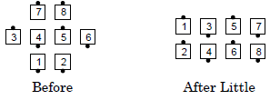
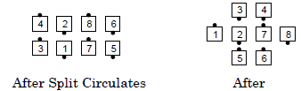

Plenty
From 1/4 Tag or 3/4 Tag: This call has 3 parts:
-
Little
-
Split Circulate 2
(formerly called "Turn the Star ½")
-
Ends Counter Rotate 1/4
and Roll while the centers
½ Zoom to form a wave


Ends in quarter tag.
Notes:
- The caller can vary the number of Split Circulates (e.g., "Plenty,
do 3 Split Circulates", "Plenty, but Split Circulate 3").
- From Diamonds, if you want the points to go as they are, the proper
usage is "Plenty, points go as you are". The command "Plenty" would
start with the points doing a 1/4 Right.
- Since the first part is a Little, the outside dancers normally begin with
a Quarter Right but the caller can tell them to quarter in a different
direction (e.g., "Plenty, outsides face in", "Left Plenty" (the outsides
quarter left), "Right Plenty" (the outsides quarter right).